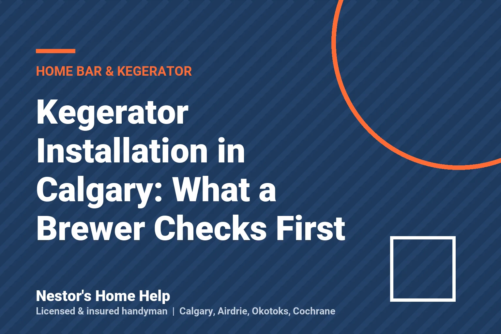

Why Kegerator Beer Pours Foamy: A Brewer's Fix List
Kegerator pouring foam in Calgary? A professional brewer's order of checks: temperature, pressure, line balance, dirty lines and a warm tower, step by step.
November 5, 2026 · 5 min read
Kegerator Installation in Calgary: What a Brewer Checks First
Planning a kegerator or home bar in Calgary? What a professional brewer checks before installing: space, venting, CO2, lines, and keeping beer tasting right.
November 3, 2026 · 5 min read
When to Replace Smoke Detectors in Your Home
Know when to replace smoke detectors, what a test can reveal, and how to keep your Calgary home protected with the right placement and yearly maintenance.
November 1, 2026 · 6 min readDemolition Service Calgary for Home Projects
Need demolition service Calgary homeowners can trust? Expect careful tear-outs, debris removal, and clear planning for renovation projects with care now.
October 30, 2026 · 6 min read
How to Winterize Outdoor Water Taps Before Freeze
Learn how to winterize outdoor water taps before Calgary freezes, prevent burst pipes, and know when a handyman can help protect your home all winter.
October 26, 2026 · 7 min read
Fence Repair vs Replacement: Which Pays Off?
Fence repair vs replacement depends on damage, age and cost. Learn when a safe repair makes sense and when a new Calgary fence is the smarter call now.
October 24, 2026 · 6 min read
Wall Anchors Versus Studs: What Holds Best?
Wall anchors versus studs: learn which support to use for TVs, shelves, mirrors and more, with safe mounting tips for Calgary homes and rentals alike.
October 20, 2026 · 7 min readCalgary Home Punch List: Fix It Before It Grows
A Calgary home punch list turns loose ends into a clear repair plan. Learn what to check, what to prioritize, and when to call a trusted handyman today.
October 16, 2026 · 6 min read
Can Landlords Charge Repairs? Alberta Rules
Can landlords charge repairs in Alberta? Learn what tenants may owe, what landlords must cover, and how to document damage, deposits, and repairs fairly.
October 12, 2026 · 6 min readCabinet Hinge Repair That Keeps Doors Aligned
Cabinet hinge repair restores smooth, quiet doors and prevents costly damage. Learn what to tighten, replace, or leave to a Calgary handyman promptly.
October 10, 2026 · 6 min read
Laminate vs Vinyl Flooring for Calgary Homes
Compare laminate vs vinyl flooring for Calgary homes. Learn how each handles water, wear, comfort, cost and installation before you choose with confidence.
October 8, 2026 · 6 min read
Why Is Your Door Sticking in Winter?
A door sticking in winter can turn a small daily annoyance into damaged trim or a lockout. Learn safe fixes and when to call a Calgary handyman today.
October 6, 2026 · 7 min read
How to Assemble Flat Pack Furniture Properly
Learn how to assemble flat pack furniture with less stress: prepare the space, follow the sequence, avoid damage, and know when to call a pro if needed.
October 4, 2026 · 6 min readDebris Removal Calgary: What Can Be Hauled Away
Need debris removal Calgary homeowners can rely on? Learn what can be hauled away, how pricing works, and when professional help saves time and mess now.
October 2, 2026 · 6 min read
Calgary Move In Repairs That Make Day One Easier
Plan Calgary move in repairs before boxes pile up. Fix doors, walls, fixtures and leaks fast so your new home is ready on day one with far less stress.
September 30, 2026 · 6 min read
Caulking Service Calgary Homes Can Rely On
Need a caulking service Calgary homeowners can count on? Learn when to re-caulk, what a proper repair includes, and how to spot water damage early on.
September 28, 2026 · 6 min read
How to Install Ceiling Light Safely at Home
Learn how to install ceiling light fixtures safely, with clear steps for shutoff, wiring, mounting, and knowing when to call a Calgary pro for help today.
September 24, 2026 · 7 min read
12 Best Small Home Improvement Projects for Calgary
Find the best small home improvement projects for a cleaner, safer, more comfortable Calgary home, with practical tips on cost, timing, and hiring help.
September 22, 2026 · 7 min read
Outlet Replacement Calgary: When to Call for Help
Need outlet replacement Calgary homeowners can count on? Learn warning signs, options, and what professional service should include for a safe, tidy repair.
September 20, 2026 · 7 min read
Home Renovation Plans That Stay on Track
Plan your home renovation with clear priorities, realistic timelines, and dependable help for repairs, updates, and finishing details in Calgary today.
September 16, 2026 · 6 min read
How to Hire an Insured Handyman in Calgary
Need to hire an insured handyman in Calgary? Check coverage, credentials, pricing, and job details before you book fast, dependable home service today.
September 14, 2026 · 6 min read
Wall Mounted TV Cord Concealment Done Right
Wall mounted TV cord concealment keeps your setup tidy and safer. Compare cord covers, in-wall kits, and professional installation for Calgary homes now.
September 12, 2026 · 6 min readHow to Read Handyman Service Reviews
Handyman service reviews reveal punctuality, pricing, care, and results. Learn how Calgary homeowners can assess them confidently before booking help.
September 10, 2026 · 6 min readHow to Fix Sagging Doors Without Making It Worse
Learn how to fix sagging doors by checking hinges, screws, jambs and strike plates. Get a smooth, secure close or know when to book skilled help today.
September 8, 2026 · 6 min read
Drywall Repair Calgary Homeowners Can Trust
Need drywall repair Calgary homeowners can count on? Learn what causes damage, when a patch is enough, and when to book a professional repair visit today.
September 4, 2026 · 6 min readCan a Handyman Install Toilets? What to Know
Can a handyman install toilets safely and legally? Learn when a local handyman is a good fit, when to call a plumber, and how to prepare for the job safely.
September 2, 2026 · 6 min read
How to Patch Drywall Holes Without a Mess
Learn how to patch drywall holes cleanly, from tiny nail marks to larger damage, with practical tools, drying tips, and when to call a Calgary handyman.
August 31, 2026 · 7 min readYard Cleanup Service Calgary Homeowners Can Count On
Need a yard cleanup service Calgary homeowners can rely on? Get practical advice on seasonal cleanup, debris removal, and booking reliable local help.
August 29, 2026 · 6 min read
Rental Property Maintenance Calgary: What Matters
Rental property maintenance Calgary landlords can plan: practical seasonal repairs, faster turnovers, and fewer costly emergency calls with less stress.
August 27, 2026 · 6 min read
How to Hang a Heavy Mirror Safely at Home
Learn how to hang a heavy mirror securely on drywall, studs, masonry, or tile, with practical hardware advice that protects walls and people to stay safe.
August 23, 2026 · 7 min read
Can a Handyman Replace Outlets? What to Know
Can a handyman replace outlets? Learn when a simple swap is appropriate, when licensing matters, and how to keep your Calgary home safe and compliant.
August 21, 2026 · 6 min readPaint Touch Up Service Calgary Homeowners Trust
Need a paint touch up service in Calgary? Fix scuffs, nail holes, chips, and worn walls with clean prep, careful colour matching, and tidy results today.
August 17, 2026 · 6 min read
Minor Electrical Work You Should Not Put Off
Minor electrical work can look simple, but safe repairs protect your home. Know when to call a qualified professional in Calgary for prompt, safe help.
August 15, 2026 · 6 min read
Floor Repair Calgary for Damage That Won’t Wait
Need floor repair Calgary homeowners can count on? Fix loose boards, cracked tile, water damage, and worn vinyl before a small problem needs repair soon.
August 11, 2026 · 6 min read
How to Replace Bathroom Faucet Without Leaks
Learn how to replace bathroom faucet safely, avoid leaks, and know when Calgary homeowners should call a handyman for fast, clean installation help today.
August 9, 2026 · 6 min read
Best Landlord Maintenance Checklist for Rentals
Use the best landlord maintenance checklist to prevent costly repairs, protect your rental, and keep tenants comfortable through every Calgary season.
July 30, 2026 · 7 min read
Toilet Replacement Calgary Homeowners Can Trust
Need toilet replacement Calgary homeowners can count on? See when replacement makes sense, what affects the work, and how a proper install prevents leaks.
July 28, 2026 · 6 min read
How to Replace Shower Caulking Without Leaks
Learn how to replace shower caulking properly to stop leaks, prevent mildew, and leave your tub or shower with a clean, durable waterproof seal at home.
July 26, 2026 · 7 min read
Small Plumbing Repairs That Cannot Wait
Small plumbing repairs can prevent water damage and wasted water. Learn when to make a quick fix and when to call a Calgary handyman for help fast today.
July 22, 2026 · 6 min read
Seasonal Home Maintenance Checklist for Calgary
Use this seasonal home maintenance checklist to protect your Calgary property through freeze-thaw weather, storms, and shifting temperatures each year.
July 20, 2026 · 6 min read
What Can a Handyman Legally Do in Alberta?
Learn what can a handyman legally do in Alberta, when permits or certified trades are required, and how to hire safely for your Calgary home repairs today.
July 18, 2026 · 6 min read
Handyman vs General Contractor - Which to Hire?
Handyman vs general contractor: compare project size, permits, cost, timing, and scope so you can hire the right professional for your Calgary home today.
July 16, 2026 · 6 min read
What Jobs Can a Handyman Do Around Your Home?
Wondering what jobs can a handyman do? From repairs and mounting to caulking and yard fixes, learn when practical home help is the right call locally.
July 12, 2026 · 6 min read
How to Repair Fence Panels Without Replacing Them
Learn how to repair fence panels safely, fix loose boards, rot and storm damage, and know when professional help is the sensible choice for your yard.
July 11, 2026 · 7 min read
Faucet Replacement Calgary Homeowners Trust
Need faucet replacement Calgary homeowners can count on? Learn when to replace, what affects cost, and how to avoid leaks and install issues.
July 10, 2026 · 7 min read
Pre Sale Home Repairs Guide for Sellers
A practical pre sale home repairs guide for sellers. Learn what to fix, what to skip, and how small repairs can help your home show better.
July 9, 2026 · 6 min read
Handyman Chestermere Home Repairs Done Right
Need handyman Chestermere home repairs? Get fast, reliable help for drywall, doors, plumbing fixes, installs, and small jobs done right.
July 7, 2026 · 7 min read
How Much Does a Handyman Cost in Calgary?
Wondering how much does a handyman cost in Calgary? See typical rates, what affects pricing, and how to compare quotes without surprises.
July 6, 2026 · 7 min read
Light Fixture Installation Calgary Made Simple
Need light fixture installation Calgary homeowners can trust? Get safe, tidy, same-day help for replacements, upgrades, and problem fixtures.
June 30, 2026 · 7 min read
TV Wall Mounting Service Calgary Homeowners Trust
Need a tv wall mounting service Calgary homeowners can trust? Get clean, secure installation, smart placement, and same-day help when available.
June 29, 2026 · 7 min read
10 Best Bathroom Upgrade Ideas That Pay Off
Discover the best bathroom upgrade ideas for comfort, storage, style, and resale value, with practical tips for budgets and busy homes.
June 28, 2026 · 7 min read
How to Choose Handyman Without Regret
Learn how to choose handyman services with confidence. Find someone licensed, insured, punctual, tidy, and clear on pricing before work starts.
June 26, 2026 · 7 min read
Same Day Handyman Calgary: What to Expect
Need same day handyman Calgary help? Learn what to expect, which jobs fit same-day service, and how to get fast, tidy repairs done right.
June 25, 2026 · 7 min read
Fence Repair Calgary: What to Fix Now
Need fence repair Calgary homeowners can count on? Learn what damage to fix now, what can wait, and when a fast professional repair saves money.
June 23, 2026 · 7 min read
Deck Repair Calgary: What Needs Fixing Now
Need deck repair Calgary homeowners can trust? Spot early damage, know what can be fixed, and avoid bigger structural problems outdoors.
June 22, 2026 · 7 min read
Toilet Replacement Cost: What You’ll Pay
Learn what toilet replacement cost includes, what changes the price, and when replacing your toilet is smarter than another repair call.
June 19, 2026 · 7 min read
Vinyl Plank Floor Repair That Lasts
Need vinyl plank floor repair? Learn what causes damage, which fixes last, and when to repair one plank or replace a larger section.
June 17, 2026 · 7 min read
Door Repair Calgary: What Needs Fixing Fast
Need door repair Calgary homeowners can count on? Learn common door issues, what to fix fast, and when a handyman is the smart call today.
June 14, 2026 · 7 min read
Furniture Assembly Calgary Without the Hassle
Need furniture assembly Calgary homeowners can count on? Get fast, careful setup done right the first time, without the stress or leftover mess.
June 10, 2026 · 7 min read